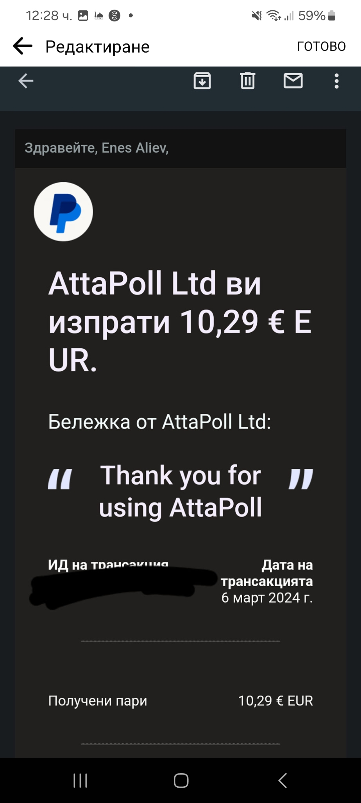
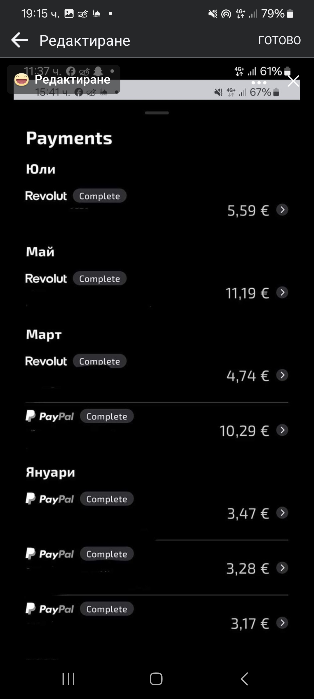
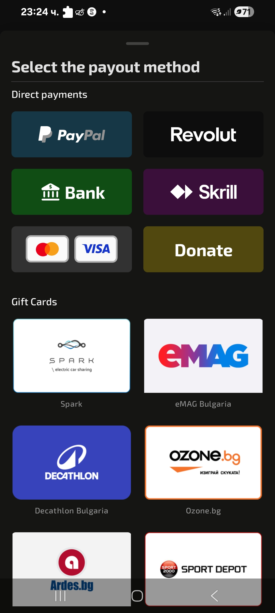
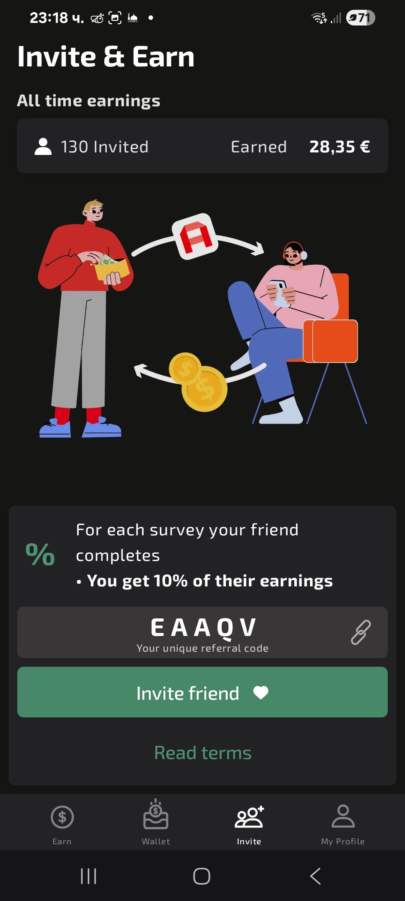

AttaPoll Review – Can You Really Earn Money from Surveys?

What is AttaPoll?
AttaPoll is a mobile app that pays you to complete short surveys and tasks. It’s fast, reliable, and has a very low minimum payout. I’ve used the app for several weeks now—here’s everything you need to know.
How AttaPoll Works
- Paid Surveys: New surveys appear daily, offering $0.10 to $2 per survey depending on length.
- Games & Tasks: AttaPoll also connects to offerwalls with games, app installs, and simple tasks for extra earnings.
- Short Time Commitment: Surveys take between 1–15 minutes to complete.
Earning Potential & Referral Program
You won’t get rich, but consistent daily users can earn around $10–$20/month. The 10% referral commission boosts this further—invite friends and earn 10% of what they make, for life!
Minimum Withdrawal & Payout Options
- Minimum Payout: Just $3 (or local currency equivalent).
- Payment Methods: Payment methods and gift card options may vary depending on your country. Options can include PayPal, Revolut, Bank Transfer, and popular gift cards such as Amazon, Starbucks, and Google Play.
- Fast Payouts: Within few seconds.
Screenshots
-
Main Survey Dashboard

-
Payment Proof
  -
Gift Card Options
 -
Referral Earnings

Conclusion
If you're looking for a simple and legit side hustle, AttaPoll is a great option. With daily surveys, fast payouts, and a solid referral program, it’s one of the most user-friendly apps out there. Use it consistently, and you can easily make some extra cash each month!
Get Started with AttaPoll
Ready to try it? Download AttaPoll now and use my referral code EAAQV to start earning immediately and support this blog!